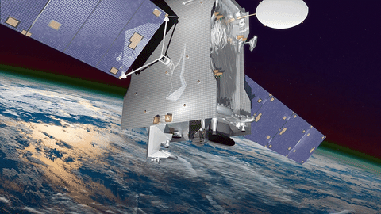
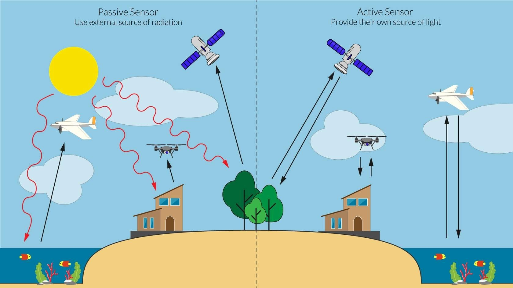
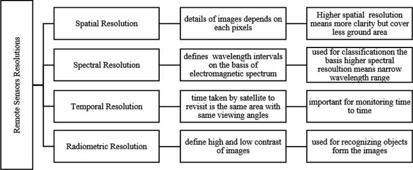
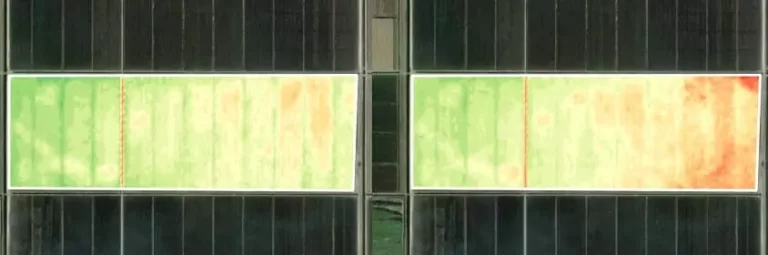
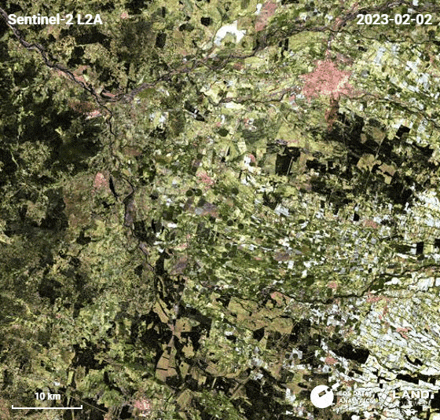
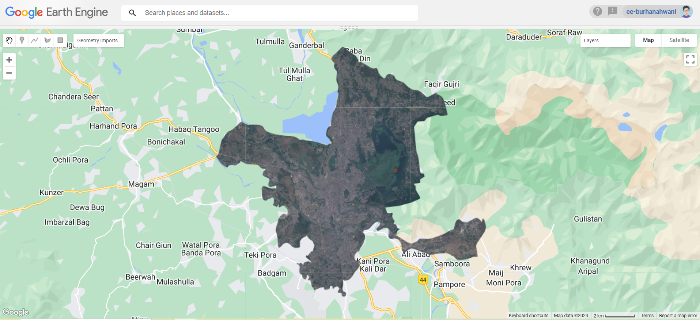

1 Week 1 - Basics
1.1 Summary
1.1.1 What is Remote Sensing, you ask?
Remote sensing is like Earth’s Personal Observer, capturing information from afar. NASA defines Remote Sensing as acquiring information from a distance - Earthdata-Website (2019) . Also, Elachi and van Zyl (2006) define remote sensing as “the acquisition of information about an object without being in physical contact with it”. All this is achieved through sensors mounted on satellites, planes, drones, etc.

1.1.2 Types of Sensors ?
Remote sensing employs two main types of sensors: Passive and Active.
Passive sensors rely on sunlight reflected off the Earth’s surface. However, they are susceptible to interference from elements like clouds and atmospheric haze.
Active sensors, on the other hand, emit signals directed towards the Earth, which bounce back to the satellite sensor. This allows active sensors to operate effectively at night and even penetrate through cloud cover, enhancing their versatility.
The choice between passive and active sensors depends on the specific environmental conditions and the type of data required for remote sensing applications. A basic difference of the two is shown in the below image explicitly

1.1.3 Electromagnetic Spectrum ?
Remote sensing is based on the principle that there is always an interaction between electromagnetic radiation and an object.Electromagnetic waves travel through the air and space, each with different wavelengths and frequencies. Some waves, like radio and infrared, have long wavelengths, while others, such as ultraviolet and x-rays, have short wavelength. Human eyes can only see a small part called visible light.
Different types of radiation operate in various parts of the electromagnetic spectrum. Sensors can read different wavelengths, thus providing diverse information. Earth’s atmosphere blocks most wavelengths, allowing only radio waves, visible light, and some infrared. Instruments, like passive sensors in the optical window and active sensors using radio waves, help us understand our surroundings.

1.1.4 Resolutions
Remote sensing data encompasses four key resolutions:
Spectral Resolution: It refers to the size of each raster cell or pixel, dictating the level of detail captured.
Spatial Resolution: It defines defines the sensor’s capability to differentiate wavelengths, determining the number of bands recorded, with multispectral sensors typically capturing 3-15 bands and hyperspectral sensors capable of thousands.
Temporal Resolution:It indicates the frequency at which an area is revisited, influencing the timeliness of data acquisition.
Radiometric Resolution: It quantifies the information contained within each raster cell, with higher resolutions yielding greater sensitivity to variations.

1.2 Applications
Remote sensing data finds numerous applications across diverse fields. It is used in agriculture for optimizing uses of fertilizers, prediction of crop yields,measuring soil moisture content, monitoring droughts, assessment of crop health, etc.

Similarly, in forestry it can be used for monitoring forest cover, tracking deforestation & controlling forest fires.Also, remote sensing is being used for checking the rapid urbanization, planning road networks, pre and post disaster preparedness & in many more fields.

Also, during my research regarding the use of remote sensing, I came across one of the works which discussed the application of remote sensing in route planning for road projects in challenging terrain (Matin, Behera, and Mohapatra (2012)). This study delved into the effectiveness of remote sensing and Geographic Information Systems (GIS) in mapping road infrastructure in rugged landscapes. Various factors influencing road network construction and the resolution of associated challenges were examined within a specific context.Another, interesting use case scenario of remote sensing that came across during my reading was, early warning landslide system used by Satyam (2021) . The risk due to landslides is a major concern in hilly terrains across the world, especially in the changing climate and rapid urbanization. All these examples together demonstrate how valuable remote sensing technology is across a wide range of fields.
1.2.1 Hands-On Experience
Because, I joined the course quite late, so I moved directly to using Google Earth Engine. Here is my work of loading the Sentinel-2 Data and then clipping it for Srinagar City.

1.3 Reflections
Transitioning from a Civil Engineering background to the realm of spatial science, particularly remote sensing, has been a thrilling journey. One notable application that resonates with me, especially concerning India, is the utilization of remote sensing for identifying “Unconnected Habitations.” These are isolated dwellings or small clusters of houses situated in regions lacking road access, electricity, and water supply. Typically nestled in mountainous terrains, these areas are predominantly inhabited by tribal communities. So, by leveraging remote sensing technology we could identify these remote settlements, facilitating the formulation of targeted policies aimed at fostering development within these underserved regions.